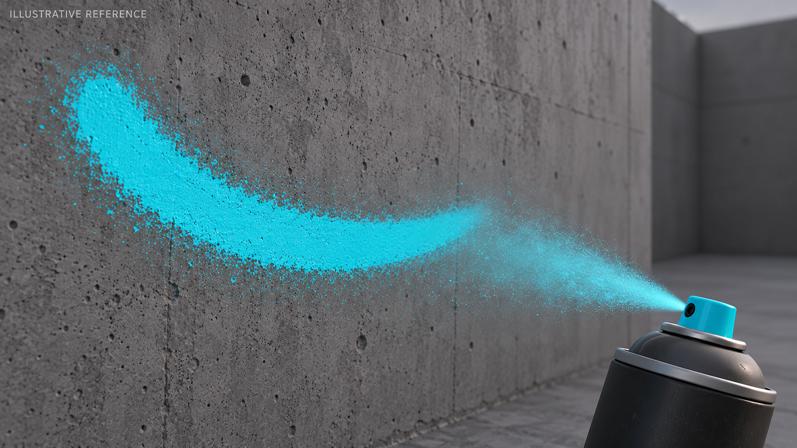
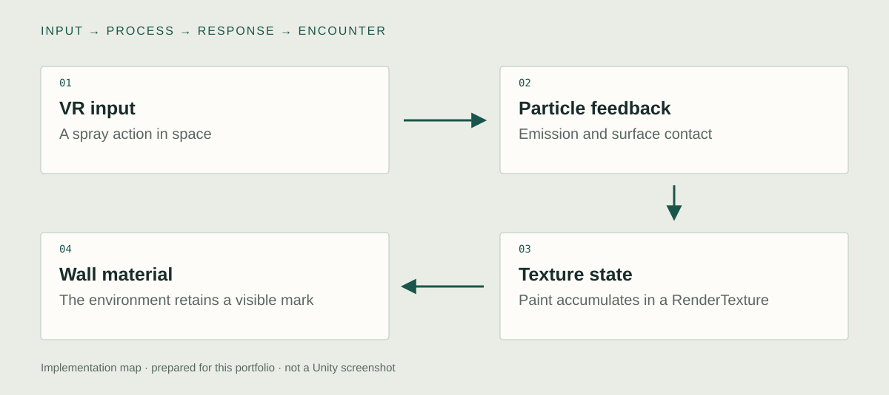

Unity implementation
VR spray & particles
I implemented the Unity VR spray interaction and its particle feedback. The spray makes the action legible while it happens: the participant can see the direction and spread of the mark-making gesture. That short-lived feedback has a different job from the painted surface that remains afterward.
Illustrative reference · AI-generated

RenderTexture painting
I used a dynamic RenderTexture in the wall material so paint could accumulate on the virtual surface. Surface-hit information connects the spray to that texture state. The precise hit-to-texture-coordinate path still needs the original code or a close Editor recording, rather than an invented raycast or collision implementation.
Virtual subway environment
I built the painting interaction within a virtual subway setting. Moving the act into VR changes its relationship to permission and physical residue. The technical result is an environment the participant can visibly alter. Disk persistence, save/load, and environmental benefit are separate claims and are not assumed here.
System & design decisions

- 01VR input
A spray action in space
- 02Particle feedback
Emission and surface contact
- 03Texture state
Paint accumulates in a RenderTexture
- 04Wall material
The environment retains a visible mark
A spray effect and a painted wall
Particles show the action as it happens. The render target carries the result after the particle disappears. Separating them makes the mark a consequence of input.
Attach the mark to a surface
The painting path connects surface-hit information to the texture read by the wall material. The exact hit-to-UV implementation still needs its original code or a focused capture.
Virtual space as a design decision
The premise is not simply a painting tool with a subway background. The virtual setting changes what it means to alter an environment and who appears able to authorize that action.
Concept
What does it mean to leave a mark when the place and its consequences are virtual?
The work begins with the conflict between expression in public space and the material and legal consequences of making a mark. Moving the action into VR changes those conditions while retaining the bodily impulse to spray, sign, and claim a surface. The virtual wall becomes a place to examine that desire.
Development
Retrospective planning notes, prepared for this portfolio.
Retain the gesture
Choose the parts of spray painting that need a bodily action and immediate feedback.
Decide what persists
Separate the short spray from the longer-lived surface state.
Stage the public place
Use a recognizable shared environment so the act of marking it carries the premise.
Further research
How does changing the persistence of a virtual mark affect a person's sense of agency over a space?
Vary: How long the painted surface state remains visible.
Hold consistent: Spray input, wall, brush appearance, and exposure time.
Proposed comparison. No controlled study or measured effect is reported.
Documentation
Graffiti Freedom is the archive title for the virtual-subway graffiti work. No quantified environmental benefit or unverified save/load behavior is claimed.
Technical captures to add
Editor and runtime captures still needed to inspect the implementation:
- VR spray & particles
The input binding, particle emission, and the surface-contact information used by the painting path. Start and stop the spray while keeping the wall and input visible.
- RenderTexture painting
The RenderTexture asset or runtime target and the wall material that reads it. Show the render target updating, then stop the particles and show the mark that remains.
- Virtual subway environment
The paintable surfaces and their relationship to the participant's reachable space. Paint across the actual supported area and show how the surface carries the result.
- Show spray input, particle feedback, surface-hit diagnostics, the RenderTexture, and the wall material together.
- Stop spraying to show the difference between transient feedback and the retained mark. Confirm any save/load feature from the original source before adding it.